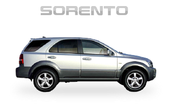

기아 쏘렌토 R 2009
디젤 2.0 TLX 고급형
계절의 냄새처럼 추억의 한 켠에 남다.
나에게 차라는 의미는 단순한 이동수단 그 이상으로의 가치가 있다.
차 없이는 갈 수 없을 것 같았던 곳으로의 여행, 오랜 시간 함께한 친구,
소중한 사람들과의 소중한 추억들 그리고 그 모든 순간에
쌓인 온갖 정.
내 차의 주행거리는 차로서의 단순한 소모량이 아닌
그 거리만큼 담겨있는 나와의 추억, 그리고 이야기로서
가치를 매길 수 없는 이야기의 매개체이다.
차를 구매할 때는 성능과 스펙을 중요시하고 금액을 비교한다면
차를 보낼 때 만큼은 이 차에 담긴 스토리와 감정을 담아내어
새로운 주인이 잘 보살펴주길 바라며 추억을 태워 보낸다.
첫 사고를 당하다.
면허를 따고 처음 산 차에 첫 사고를 당했다. 쌀쌀한 겨울 날씨라 히터를 오래 틀고 운전하던 상대가
점심에 먹은 갈비탕이 든든한 나머지 졸아버렸다고 이야기했다. 일방적인 사고였지만 운행중에 일어나
방어운전하지 않았다는 명분으로 과실이 측정되었다. 억울하지만 보험비 할증이 붙어버렸다.
7년지기 친구들과 멀리 떠나다.
중학교 동창 친구들과 인연을 이어온지 벌써 7년이 다 되어가던 해, 각자의 삶을 살고 있는 모두가 모여
여름 휴가를 가기로 했다. 마치 정한듯 친구의 차도 내 차와 같은 년식의 같은 브랜드의 차여서 모두가
신기해했다. 함께 세차를 마친 후 장을 보고 누가 먼저 도착하는지 내기를 하기도 하며 여행을 즐겼다.
아름다운 노을과 함께 군대 면접을 보다.
1년간의 휴학을 마치고 복학하는 시기에 군대에 대한 걱정이 시작되었다. 현역병보다는 전공을 살려서 근무하는게
2년이라는 시간을 보내는 효율적인 방법이라 생각했다. 해군 디자인병 면접을 위해 충남 계룡에 다녀오게 되었다.
왕복 4시간 운전, 4시간의 면접 도합 8시간의 스케쥴로 피곤했지만 상경길 노을이 모든 것을 잊게 해주었다.
차량 소개
고급 소파 같은,
안락한 실내 디자인
운전시 조작해야하는 실내 공조버튼과
핸들리모컨, 네비게이션 등 실내에
자리잡은 버튼들은 직관적이다.
기아 쏘렌토 R TLX 고급형
브라운 가죽 시트 실내
국내 최고, 오랜 역사의 이름 쏘렌토,
고유의 DNA를 유지해오는 전통 SUV 라인업
-

쏘렌토
2002 ~ 2008
기아 쏘렌토 라인업의 첫 주자로서 국민
SUV의 칭호를 얻어 베스트 셀러가 되기도
했다. 아직도 종종 도로에서 볼 수 있으며
뛰어난 내구성을 자랑한다. -
쏘렌토 R
2009 ~ 2014
출시 후 7년만에 풀체인지 된 모델로서
기아의 새로운 패밀리룩을 탑재한 디자인을
탑재하고 있다. 기아의 R엔진을 탑재하여
모델명에 ‘R’이라는 서브네임이 추가되었다. -
All-New 쏘렌토
2014 ~ 2020
두번째 풀체인지 된 올-뉴 소렌토는 이전과
달리 점잖고 세련된 이미지의 디자인으로
해외에서도 많은 판매량으로 기아 SUV의
내구성과 신뢰도를 입증하고 있는 모델이다.